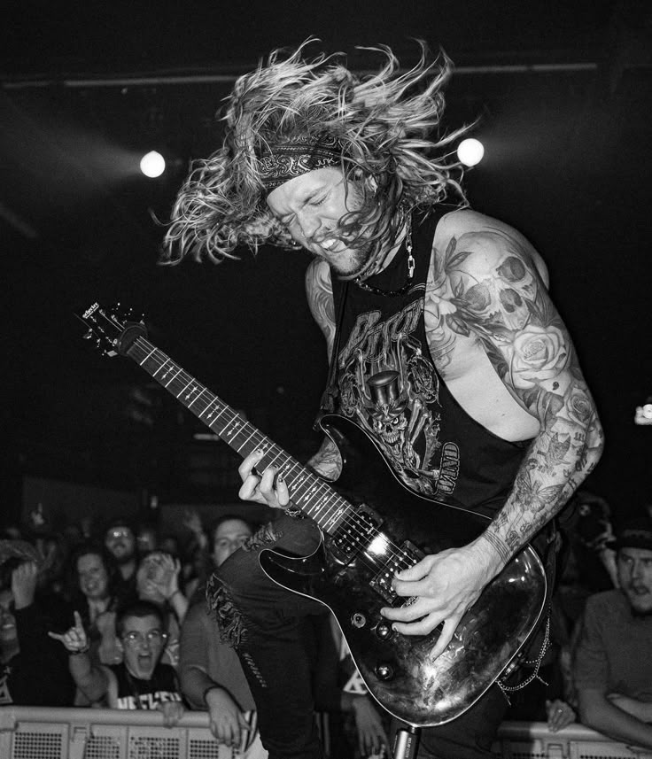

<!-- ... (نفس الكود اللي فوق) ... -->

        <!-- قسم الفنانين -->
        <section class="artists-section">
            <h2>الفنانون</h2>
            <div class="artists-grid">
                <!-- بطاقة فنان NEFFEX (استخدمنا الصورة اللي اخترتها) -->
                <div class="artist-card">
                    
                    <h3>NEFFEX</h3>
                </div>
                <!-- بطاقة فنان (استخدمنا الصورة التانية كمثال) -->
                <div class="artist-card">
                    
                    <h3>NEFFEX Live</h3>
                </div>
                <!-- بطاقة فنان (استخدمنا الصورة التالتة كمثال) -->
                <div class="artist-card">
                    
                    <h3>NEFFEX Profile</h3>
                </div>
            </div>
        </section>
        
<!-- ... (باقي الكود زي ما هو لحد ما نوصل للـ footer) ... -->

    <!-- مشغل الموسيقى بقى موجود جوه الـ footer مباشرة -->
    <footer>
        <div class="music-player">
            <div class="song-info">
                <span class="current-song-title">اختر أغنية لتشغيلها</span>
                <span class="current-song-artist"></span>
            </div>
            <div class="player-controls">
                <!-- هنا هنحط أزرار التشغيل والإيقاف والتالي والسابق -->
                <i class="fa-solid fa-backward-step"></i>
                <i class="fa-solid fa-circle-play" id="main-play-btn"></i>
                <i class="fa-solid fa-forward-step"></i>
            </div>
            <div class="progress-bar-container">
                <!-- شريط تقدم الأغنية -->
                <div class="progress-bar"></div>
            </div>
        </div>
    </footer>

<!-- ... (نفس الكود اللي تحت) ... -->
